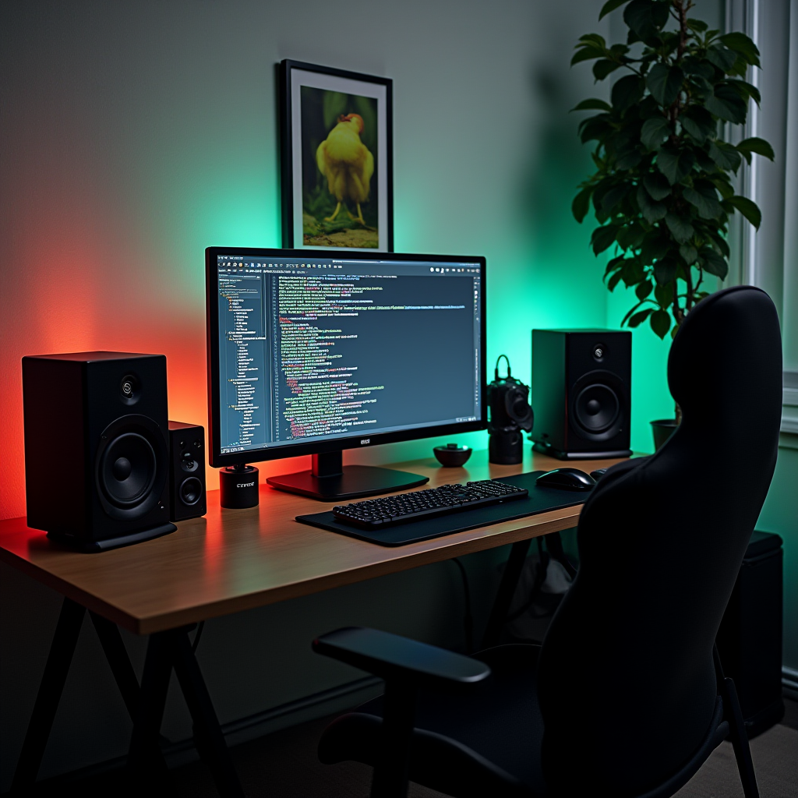

OCTOBER 17, 2024
Blog one
I'm excited to start a new learning journey as a full stack software developer!
After several months of learning in the Frontend Developer Carrer Path.
OCTOBER 17, 2024
Yoga
Yoga can help with concentration through calming your mind and removing the
distracting thoughts.

OCTOBER 17, 2024
Blog one
I'm excited to start a new learning journey as a full stack software developer!
After several months of learning in the Frontend Developer Carrer Path.
OCTOBER 17, 2024
Physical Activity
Running and software engineering are two very different disciplines.
Running is fundamentally a very simple activity, software engineering can be pretty complex.
So how can slamming your ham poles against the ground repeatedly to the point of exhaustion
improve your coding? That’s what I’m going to try lay out here.
OCTOBER 17, 2024
Blog One
I'm excited to start a new learning journey as a full stack software developer!
After several months of learning in the Frontend Developer Carrer Path.
OCTOBER 17, 2024
Relaxation
There’s something about spending time on the beach that helps melt stress and put you in a better
mindset. It’s not in your head some science explains the different reasons the shore helps you relax.
Although researchers continue to explore these awesome side effects, take it as further proof that,
yes, you really do need a beach vacation!